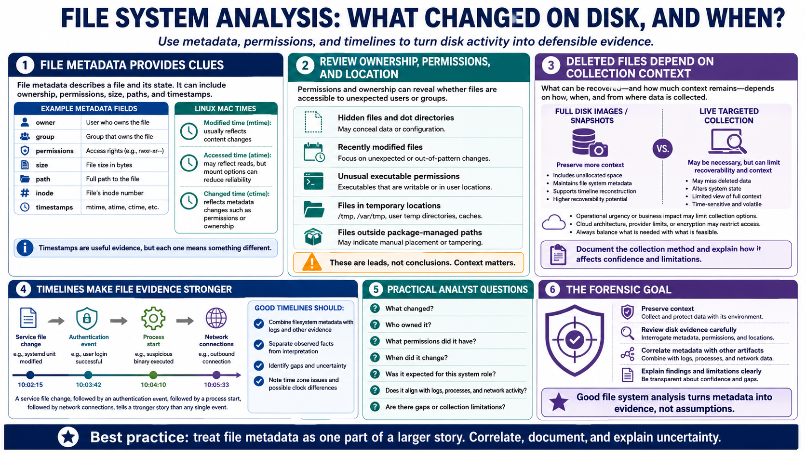

File System and Timeline Analysis
Connecting to LMS... Progress: in progress

Narration
File system analysis helps analysts understand what changed on disk and when. File metadata can include ownership, permissions, size, paths, and timestamps. Linux files commonly have modified, accessed, and changed times, often called MAC times. Modified time usually reflects content changes. Accessed time may reflect reads, though mount options can reduce its reliability. Changed time reflects metadata changes such as permissions or ownership.
Permissions and ownership can reveal whether files are accessible to unexpected users or groups. Hidden files, dot directories, recently modified files, unusual executable permissions, files in temporary locations, and files outside package-managed paths can all be worth review. None of these signals is conclusive alone. They are leads that need context.
Deleted file considerations depend on collection method, filesystem, system activity, and timing. Sometimes full disk images or snapshots preserve more context than a live targeted collection. In other cases, operational urgency or cloud architecture may limit what can be collected. The analyst should document the collection method and explain how it affects confidence and limitations.
Timelines become powerful when filesystem metadata is combined with logs and other evidence. A service file change, followed by an authentication event, followed by a process start, followed by network connections, tells a stronger story than any single event. Good timelines separate observed facts from interpretation and identify gaps, uncertainty, time zone issues, and possible clock differences.